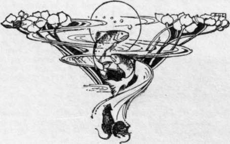

The Crag Of Vortigern. Part 3
Description
This section is from the book "Creatures Of The Night: A Book Of Wild Life In Western Britain", by Alfred W. Rees. Also available from Amazon: Creatures Of The Night: A Book Of Wild Life In Western Britain.
The Crag Of Vortigern. Part 3
While we stood in the wheat-field, Philip remarked: " We mustn't stay long before going back to the Crag; but I'll call the doe I sent you from this 'form,' and perhaps you'll see one of her tricks to mislead a fox as she returns home. She's very careful of her young till they're about a fortnight old, though soon afterwards she lets them 'fend' for themselves. We'll hide in the ditch, and I'll imitate a leveret's cry. But I mustn't imitate it so that she may think her little one is hurt, else she's as likely as not to come with a rush, and you won't see how she'd act under ordinary circumstances".
When we were comfortably settled in the fern, the poacher twice uttered a feeble, wailing cry, and, after being silent for some minutes, repeated the quavering call. Then, after a long interval, he again, though in a much lower tone, repeated the cry. No answering cry was heard, but suddenly, as she had appeared on the path by the furze, the doe-hare came in sight at the edge of the ditch a little distance away. She approached for several yards, then disappeared, with two or three long, graceful bounds, into the corn that waved about her as she leaped. She appeared once more, and squatted in the ditch on the other side of the field; hence she jumped high into the air, and alighted on the hedge; then, by a longer bound than any I had previously seen, she gained a spot well out into the field, and raced along, till, directly opposite us, she yet again leaped into the hedge, and from the hedge into the wheat-field, where she immediately lay down with her little ones in the " form".
Ianto, Philip, and I at last settled quietly to watch for the badger's visit to the clearing. Philip told in a whisper of jokes he had played on the keeper; Ianto capped these stories with reminiscences of younger days and nights; and I, though hating bitterly the ruffian loiterers of the village who subsisted on the spoils of the trap, the snare, and the net, and were guilty of cowardly acts of revenge when checkmated in the very game they chose to play, felt a certain sympathy with the two old men by my side, who, as I was convinced, had fairly and squarely entered into the game, and taken their few reverses without retaliation, only becoming afterwards keener than ever to avoid all interference.
In the height of my enjoyment of an unusually good story, Philip, with a slight movement, drew my attention to a faint, crackling noise coming from the margin of the glade, where moonlight and shadow lay in sharp contrast at the foot of the trees; he then whispered that the old badger was standing there. Ianto almost simultaneously drew my attention thither, but all that I could see at the spot indicated were small, flickering patches of light and shadow.
I quietly drew close to Philip, and murmured in his ear: " Are you sure it's the badger ?" He nodded ; and 1 continued, " I see a movement in the leaves, but nothing else." The old man turned his head slightly, and replied, " What you see is the badger scratching his neck against a tree; the ticks are evidently tickling him." And he chuckled as he recognised his unintentional pun.
For some minutes I could hardly believe he was right; then, slowly, I recognised the shape of the badger's head, and what I had taken to be flickering lights and shadows on the leaves changed to the black and white markings of the creature's face. I had never before seen a badger under similar conditions; and I had often wondered what purpose those boldly contrasted markings could serve. Now, as their purpose was revealed, I was startled by the manifestation of Nature's protective mimicry. Even when, a little later, the animal ventured out from the oak, and stood alert for the least sight or sound or scent of danger, the moonlight and the shadow blended so harmoniously with the white and the black of his face markings, and with the soft blue-grey of his body, that he seemed completely at one with his surroundings, and likely to elude the most observant enemy. Fully a half hour went by before he decided to cross the glade. Then, as if irritated by a sense of his own timidity, he abandoned his excessive caution, and hastened along his run-way through the clearing; and, as he passed, I noted his queer, rolling gait, and heard his squeaks and grunts as if he were angrily complaining to himself of some recent wrong, and vowing vengeance; I heard, also, the snapping of leaves and twigs beneath his clumsy feet, and I smelt the sure and certain smell of a badger.
Soon, the fisherman and I turned homewards, and left the poacher to less innocent sport. As we gained the crest of the hill, the melancholy cry of the brown owl came to our ears; and Ianto said, " Philip is a big vagabone—bigger than me, I think. No doubt he's fetched his nets from the cave beneath the Crag, and is down at the river by now. Promise me, sir, as you'll never go nigh that cave when he's alive. It's his secret place, as only him and me knows anything about. He told me to ask you that favour".
Long after both Ianto and Philip were dead, I happened one day, while in the woods, to remember the incidents I have just related, and I made my way to the foot of the Crag. I found no opening in the face of the rock, except one — apparently a rabbit hole — near a rent in the boulder. Climbing around the rock, however, I noticed that a large, flat stone lay in a rather unexpected position on a narrow cleft. I removed it, and saw that it covered the entrance to a dark hollow. At the same moment I heard a slight rustle behind me, as some animal darted from the hole I had previously examined. I scrambled down into the chamber, and there, when my eyes had become accustomed to the darkness, I saw three tiny fox-cubs huddled on the damp, mossy ground. As I knelt to stroke them gently, and my hand rested for a moment on the floor beside them, I touched the remains of an old, rotting net.

Continue to: